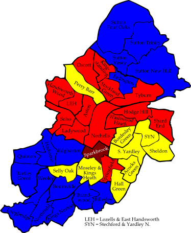
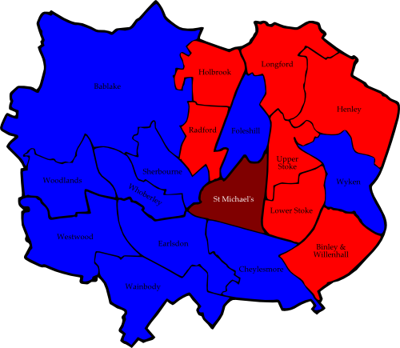
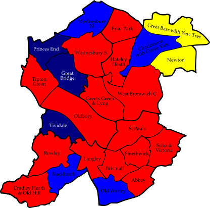
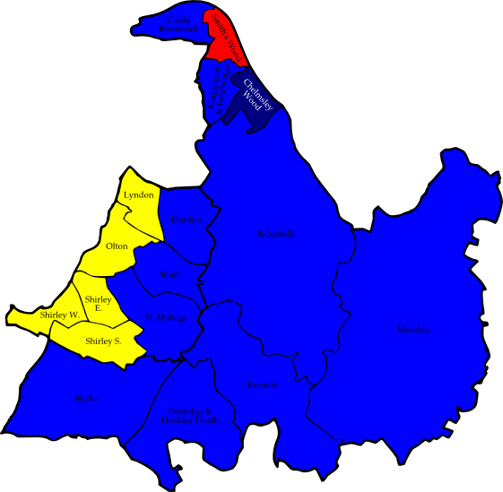
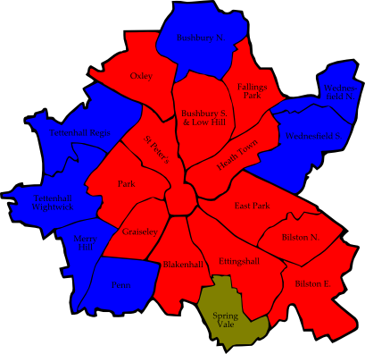

7.1 Birmingham
Note: The result for Kingstanding was the subject of an election petition after errors at the count led to Sharon Ebanks (BNP) being wrongly declared elected. The result shown below is the corrected one.
LCA = Legalise Cannabis Alliance
NF = National Front
Acocks Green
|
Iain Bowen | LD | 2,607 |
| John O'Shea | Lab | 1,632 |
| Patrick Collins | BNP | 927 |
| Kenneth Axford | C | 630 |
| Mina Coalter | Grn | 261 |
Aston
|
Ziaul Islam | Lab | 3,234 |
| Abdul Khalique | LD | 2,698 |
| Kenneth Jeffers | Ind | 283 |
| Alliya Stennett | Respect | 242 |
| Mohammed Mushtaq | C | 213 |
| Dennis Phillips | BNP | 170 |
| Geoffrey Tapalu | Grn | 100 |
Bartley Green
|
Bruce Lines | C | 3,298 |
| Stephen Mansell-Green | Lab | 1,399 |
| Philip Rudge | BNP | 824 |
| John Hemming | LD | 406 |
| Steven Goodsell | Grn | 244 |
Billesley
|
Susan Axford | C | 2,608 |
| Dean Burfoot | Lab | 2,110 |
| Jeffrey Cahill | BNP | 1,034 |
| Tony King | LD | 692 |
| Margaret James | Grn | 310 |
Bordesley Green
|
Zaker Choudry | LD | 4,267 |
| Zafar Iqbal | Lab | 3,273 |
| Michael Jones | BNP | 390 |
| David Barrie | C | 382 |
| Alan Clawley | Grn | 332 |
Bournville
|
Bill Evans | C | 3,200 |
| Peter Griffiths | Lab | 1,974 |
| Philip Banting | LD | 1,107 |
| Barney Smith | Grn | 765 |
| Malcolm Doughty | BNP | 776 |
| Stuart Estell | Loony | 104 |
Brandwood
|
Kenneth Hardeman | C | 2,571 |
| Gary Mills | Lab | 2,262 |
| Gemma Orton | BNP | 887 |
| Philip Wagg | LD | 801 |
| Anna Masters | Grn | 453 |
Edgbaston
|
Fergus Robinson | C | 2,503 |
| Jagvinder Singh Gill | Lab | 1,311 |
| Nicholas da Costa | LD | 586 |
| Joseph Rooney | Grn | 356 |
| Peter Lawrie | BNP | 218 |
Erdington
|
Robert Alden | C | 2,210 |
| Susanna McCorry | Lab | 1,889 |
| Elizabeth Wainwright | BNP | 826 |
| Gareth Hardy | LD | 559 |
| Mark Oley | Grn | 321 |
Hall Green
|
Paula Smith | LD | 3,481 |
| Robert Harvey | C | 2,319 |
| Samuel Burden | Lab | 1,288 |
| Terence Larkin | BNP | 656 |
| Lydia Bradshaw | Grn | 245 |
| Peter Hillman | UKIP | 84 |
Handsworth Wood
|
Narinder Kaur Kooner | Lab | 3,300 |
| Arjan Singh | C | 1,907 |
| Kingsley Douglas | LD | 979 |
| Joan Fairclough | Grn | 410 |
| Darren Conlan | BNP | 291 |
Harborne
|
Michael Whitby | C | 3,200 |
| John Priest | Lab | 1,823 |
| Philip Simpson | Grn | 665 |
| Mohammed Sagier | LD | 577 |
| Josephine Larkin | BNP | 364 |
Hodge Hill
|
Gillian Beddows | Lab | 2,342 |
| Gwyn Neilly | LD | 2,026 |
| Denis Adams | BNP | 1,123 |
| Paul Valdmanis | C | 724 |
| Peter Johnson | UKIP | 402 |
| Daniel Cook | Grn | 173 |
Kings Norton
|
Margaret Sutton | C | 2,344 |
| Stewart Stacey | Lab | 1,822 |
| Malcolm Owen | BNP | 854 |
| Brian Peace | LD | 458 |
| Robert Card | Grn | 338 |
Kingstanding (2)
|
Zoe Hopkins | Lab | 1,894 |
| Catharine Grundy | Lab | 1,823 |
| Sharon Ebanks | BNP | 1,329 |
| Mick Hawker | C | 1,134 |
| Robert Higginson | C | 966 |
| Terry Williams | Ind | 615 |
| Mark Haddon | LD | 514 |
| Hubert Duffy | LD | 446 |
| Richard Pitt | Grn | 315 |
| Anne Bennet | Ind | 171 |
| Mohammed Malik | Ind | 58 |
Ladywood
|
Carl Rice | Lab | 1,645 |
| Peter Smallbone | C | 632 |
| Zalal Choudhury | LD | 439 |
| Damien Duff | Grn | 263 |
| Keith Axon | BNP | 237 |
Longbridge
|
Susan Barton | C | 2,021 |
| Amy Watson | Lab | 1,818 |
| Stephen Heath | BNP | 1,048 |
| Sven Harvey | LD | 559 |
| William van Marle | Grn | 272 |
Lozells and East Handsworth
|
Kim Kaur Brom | Lab | 3,300 |
| Mohammed Aslam | LD | 1,657 |
| Raghib Ahsan | Respect | 1,370 |
| Merisha Stevenson | C | 495 |
| Eric Fairclough | Grn | 208 |
| Zane Patchell | BNP | 79 |
Moseley and Kings Heath
|
Ernest Hendricks | LD | 2,502 |
| Barry Henley | Lab | 2,361 |
| Aysan al-Haq | C | 1,006 |
| Stuart Masters | Grn | 741 |
| Lynne Hubbard | Respect | 586 |
| Keith Davis | BNP | 347 |
Nechells
|
Chaudhry Rashid | Lab | 2,305 |
| Mohammed Khan | LD | 969 |
| Mohammed Akram | C | 458 |
| David Glover | BNP | 404 |
| Janet Assheton | Grn | 384 |
Northfield
|
Randal Brew | C | 2,674 |
| Brian Seymour-Smith | Lab | 1,883 |
| Leslie Orton | BNP | 1,243 |
| Andrew Moles | LD | 705 |
| Susan Pearec | Grn | 413 |
Oscott
|
June Dring | Lab | 2,122 |
| Graham Green | C | 2,104 |
| Gerard McLaughlin | BNP | 1,652 |
| Jonathan Hassall | LD | 564 |
| Harry Eyles | Grn | 252 |
Perry Barr
|
Karen Hamilton | LD | 3,077 |
| Rabinder Singh Gill | Lab | 1,555 |
| Alan Chamberlain | BNP | 1,045 |
| Meirion Jenkins | C | 633 |
| Lester Mundy | Grn | 224 |
Quinton
|
Jennifer James | C | 3,034 |
| Brenda Dacosta | Lab | 2,932 |
| Alan Meer | BNP | 681 |
| Susan Sherwen | LD | 511 |
| Peter Beck | Grn | 350 |
| Paul Bayliss | Ind | 131 |
Selly Oak
|
David Radcliffe | LD | 2,503 |
| David Williams | Lab | 1,616 |
| Barbara Wood | C | 1,042 |
| Peter Tinsley | Grn | 554 |
| Paul Billingham | BNP | 328 |
Shard End
|
Margaret Byrne | Lab | 2,016 |
| Mark Neary | BNP | 1,320 |
| Paul Burke | C | 937 |
| Bryan Brooke | LD | 565 |
| John Read | Grn | 150 |
| Joyce Ware | UKIP | 117 |
Sheldon
|
Michael Ward | LD | 3,233 |
| Robert Devenport | BNP | 1,132 |
| Michael Johnson | Lab | 792 |
| Derek Johnson | C | 556 |
| Michael Sheridan | Grn | 139 |
| Paul Morris | NF | 74 |
| Colin Preece | LCA | 45 |
Soho
|
Serveliata Hargreaves | Lab | 3,343 |
| Asif Yousaf | LD | 1,541 |
| David Williams-Masinda | C | 502 |
| Huw Davies | Grn | 294 |
| Darren Allen | BNP | 173 |
South Yardley
|
James Whorwood | LD | 3,249 |
| Javed Iqbal | Lab | 1,470 |
| Tanya Whitehead | BNP | 1,001 |
| Pervez Akhtar | C | 640 |
| Hazel Clawley | Grn | 311 |
| Ian Lake | NF | 125 |
Sparkbrook
|
Salma Yaqoob | Respect | 4,339 |
| Mohammed Azim | Lab | 2,700 |
| Adil Rashid | LD | 990 |
| William Hordern | C | 343 |
| Charles Alldrick | Grn | 309 |
| Matthew Benton | BNP | 109 |
Springfield
|
Mohammed Fazal | Lab | 2,910 |
| Roger Harmer | LD | 2,437 |
| Salma Iqbal | Respect | 1,690 |
| Mahindarpal Singh | C | 487 |
| Lynette Orton | BNP | 323 |
Stechford and Yardley North
|
Carol Jones | LD | 3,059 |
| John Bliss | Lab | 1,172 |
| Robert Purcell | BNP | 1,112 |
| Robert Clark | C | 536 |
| Edith Roberts | Grn | 158 |
| Anthony Brooks | Ind | 144 |
| Alan Ware | UKIP | 79 |
Stockland Green
|
Barbara Tassa | Lab | 2,165 |
| Jackie Banks | C | 1,174 |
| Richard Lumby | BNP | 777 |
| Richard Pearson | LD | 606 |
| John Bentley | Grn | 316 |
Sutton Four Oaks
|
Dorothea Underwood | C | 4,858 |
| Jane Robins | LD | 848 |
| Maureen Davies | BNP | 679 |
| Manish Puri | Lab | 577 |
| Ulla Grant | Grn | 331 |
Sutton New Hall
|
June Fuller | C | 3,715 |
| Christopher Hillcox | Lab | 899 |
| Carl Brisker | BNP | 851 |
| Jean Woods | LD | 672 |
| Jim Orford | Grn | 309 |
Sutton Trinity
|
Alberta Waddington | C | 3,624 |
| Roger Barley | Lab | 1,036 |
| Maureen Parker | LD | 828 |
| Stephen Morris | BNP | 718 |
| Bert Gedin | Grn | 361 |
Sutton Vesey
|
Alan Rudge | C | 3,602 |
| Robert Pocock | Lab | 1,444 |
| Sidney Woods | LD | 822 |
| Norman Ashton | BNP | 796 |
| Judith Orford | Grn | 422 |
Tyburn
|
Lynda Clinton | Lab | 1,643 |
| Gerald Brien | C | 1,071 |
| Lee Windridge | BNP | 897 |
| John Line | LD | 702 |
| Tamara Young | Grn | 197 |
Washwood Heath
|
Mohammed Idrees | Lab | 4,990 |
| Hakil Ahmed | LD | 2,795 |
| Wilfred Holland | C | 540 |
| Graham Jones | BNP | 420 |
| Elinor Stanton | Grn | 248 |
Weoley
|
Peter Osborn | C | 2,207 |
| Michael Drinkwater | Lab | 1,873 |
| Julie Ashton | BNP | 1,004 |
| Trevor Sword | LD | 758 |
| David Toke | Grn | 307 |
Consolidated Results — Birmingham
|
Labour | 82,120 | 31.5% | 15 councillors |
| Conservative | 68,133 | 26.1% | 17 councillors |
| Liberal Democrat | 58,349 | 22.4% | 9 councillors |
| British National Party | 29,045 | 11.1% | |
| Green Party | 12,801 | 4.9% | |
| Respect — The Unity Coalition | 8,227 | 3.2% | 1 councillor |
| Independents | 1,231 | 0.5% | |
| UK Independence Party | 682 | 0.3% | |
| National Front | 199 | 0.1% | |
| Monster Raving Loony Party | 104 | 0.0% | |
| Legalise Cannabis Alliance | 45 | 0.0% | |

| Figure 7.1: Birmingham 2006 |
7.2 Coventry
IVL = Independent Voice of Longford
Bablake
|
Andrew Williams | C | 2,368 |
| Christopher Youett | Lab | 1,213 |
| Peter Simpson | LD | 761 |
Binley and Willenhall
|
John Mutton | Lab | 1,553 |
| Allan Andrews | C | 1,211 |
| Peter Hanbury | BNP | 727 |
| Geoffrey Sewards | LD | 428 |
Cheylesmore
|
Linda Reece | C | 1,890 |
| Jean Jackson | Lab | 1,392 |
| Terence Kenny | LD | 601 |
| Jeanette Boyce | BNP | 500 |
Earlsdon
|
Andrew Matchet | C | 2,520 |
| Akhtar Bilal | Lab | 1,073 |
| Scott Redding | Grn | 805 |
| Vincent McKee | LD | 670 |
Foleshill
|
Altaf Adalat | C | 1,847 |
| Malkiat Singh Auluck | Lab | 1,841 |
| Susan Johnston-Wilder | LD | 266 |
| Thomas Jones | BNP | 163 |
Henley
|
Kevin Maton | Lab | 1,475 |
| Kenneth Armstrong | C | 1,326 |
| Esther Kenny | Soc Alt | 572 |
Holbrook
|
Evelyn Lucas | Lab | 1,658 |
| Brinder Seni | C | 871 |
| Dennis Jeffery | LD | 544 |
| Simon Bien | BNP | 469 |
Longford
|
Lindsley Harvard | Lab | 1,487 |
| Val Stone | IVL | 1,091 |
| Harry Maeers | C | 554 |
| Derek Franklin | LD | 285 |
Lower Stoke
|
Philip Townshend | Lab | 1,483 |
| Michael Hammon | C | 1,076 |
| Christine Oddy | Ind | 539 |
| Richard Kay | LD | 457 |
| David Runnalls | Soc Alt | 292 |
Radford
|
Keiran Mulhall | Lab | 1,564 |
| David Smith | C | 692 |
| Peter Johnston-Wilder | LD | 433 |
| Tracey Whitehouse | BNP | 415 |
| David Anderson | Ind | 180 |
St Michael's
|
Robert Windsor | Soc Alt | 1,191 |
| Suleman Bhyat | Lab | 1,106 |
| Jane Williams | C | 428 |
| Daniel Searles | LD | 248 |
Sherbourne
|
David Arrowsmith | C | 1,457 |
| Howard Lacy | Lab | 1,169 |
| Arthur Thomas | LD | 597 |
| Jason Toynbee | Soc Alt | 357 |
Upper Stoke
|
Sucha Singh Bains | Lab | 1,792 |
| Jacqueline Basu | LD | 1,762 |
| Harbans Singh Gumman | C | 455 |
Wainbody
|
Gary Crookes | C | 2,612 |
| Joseph Ijoma | Lab | 1,013 |
| Gilbert Penlington | LD | 751 |
Westwood
|
David Skinner | C | 1,566 |
| Sheila Lacy | Lab | 1,374 |
| Mark Badrick | BNP | 473 |
| Edward Williams | LD | 383 |
| Henderson Brooks | Ind | 120 |
Whoberley
|
Clifford Ridge | C | 1,701 |
| David Welsh | Lab | 1,285 |
| Brian Lewis | LD | 736 |
| Ross Saunders | Soc Alt | 338 |
Woodlands
|
Anthony O'Neill | C | 2,205 |
| Abdul Khan | Lab | 922 |
| Stephen Howarth | LD | 725 |
| Julie Allen | BNP | 653 |
Wyken
|
Angela Waters | C | 1,672 |
| Hazel Sweet | Lab | 1,612 |
| Adrian Dyke | LD | 701 |
Consolidated Results — Coventry
|
Conservative | 26,451 | 37.4% | 10 councillors |
| Labour | 25,012 | 35.4% | 7 councillors |
| Liberal Democrat | 10,348 | 14.6% | |
| British National Party | 3,400 | 4.8% | |
| Socialist Alternative | 2,750 | 3.9% | 1 councillor |
| Independent Voice of Longford | 1,091 | 1.5% | |
| Independents | 839 | 1.2% | |
| Green Party | 805 | 1.1% | |

| Figure 7.2: Coventry 2006 |
7.3 Dudley
Amblecote
|
Liz Walker | C | 1,482 |
| John Martin | Lab | 951 |
| Margaret Hanson | LD | 544 |
Belle Vale
|
Jill Nicholls | C | 1,872 |
| Paul Cornick | Lab | 1,135 |
| Richard Alonzo | Respect | 420 |
Brierley Hill
|
Zafar Islam | Lab | 1,146 |
| Kerry Bradley | C | 841 |
| John Dyer | LD | 615 |
Brockmoor and Pensnett
|
Judy Foster | Lab | 1,141 |
| John Davies | C | 808 |
| Amanda Mobberley | UKIP | 344 |
| Lois Bramall | LD | 281 |
Castle and Priory
|
Alan Finch | Lab | 1,442 |
| Julian Mitchell | BNP | 890 |
| Daryl Millward | C | 632 |
| Philip Rowe | UKIP | 381 |
| Kieran Smith | LD | 309 |
Coseley East
|
Susan Ridney | Lab | 1,258 |
| Kenneth Griffiths | BNP | 1,238 |
| Clive Murray | C | 845 |
| Claire O'Kane | LD | 292 |
Cradley and Foxcote
|
Timothy Crumpton | Lab | 1,699 |
| John Perry | C | 1,429 |
Gornal
|
Timothy Wright | C | 1,546 |
| Jeffrey Jewkes | Lab | 1,183 |
| Timothy Alden | BNP | 1,170 |
| Robert Dudley | UKIP | 477 |
| Michael Jones | LD | 243 |
Halesowen North
|
Jeff Hill | C | 1,818 |
| Parmjit Singh Sahota | Lab | 1,167 |
| Andrew McKay | LD | 559 |
| Aldo Mussi | Grn | 241 |
Halesowen South
|
John Woodall | C | 2,940 |
| Martin Knight | Lab | 1,084 |
Hayley Green and Cradley South
|
Antony Burston | C | 2,318 |
| Michael Kelly | Lab | 1,143 |
Kingswinford North and Wall Heath
|
Lynn Boleyn | LD | 1,874 |
| Terence Billingham | C | 1,813 |
| Madeleine Cowley | Lab | 631 |
Kingswinford South
|
Patrick Harley | C | 1,940 |
| Jon Bramall | LD | 1,380 |
| Stephen Haycock | Lab | 789 |
Lye and Wollescote
|
Peter Lowe | Lab | 1,337 |
| David Vickers | C | 1,280 |
| Mohammed Arif | LD | 359 |
Netherton, Woodside and St Andrew's
|
Lynda Coulter | Lab | 1,185 |
| Richard Gwinnett | C | 910 |
| James Mobberley | UKIP | 474 |
| Derise Williams | LD | 387 |
Norton
|
Angus Adams | C | 2,159 |
| David Sheppard | LD | 1,583 |
| David Jeffries | Lab | 570 |
Pedmore and Stourbridge East
|
Colin Wilson | C | 2,639 |
| Tracy Wood | Lab | 980 |
| Simon Hanson | LD | 678 |
Quarry Bank and Dudley Wood
|
David Sparks | Lab | 1,319 |
| Phillip Moore | C | 958 |
| John White | LD | 450 |
St James's
|
Khurshid Ahmed | Lab | 895 |
| Ribirtha Hart | LD | 844 |
| Dean Major | BNP | 743 |
| Glenis Simms | C | 586 |
| Carol Pearce | UKIP | 426 |
St Thomas's
|
Steve Waltho | Lab | 1,574 |
| Phillip Wimlett | UKIP | 824 |
| Alan Gallis | C | 567 |
| Giovanna Faulkner | LD | 444 |
Sedgley
| Charles Fraser-Macnamara | C | 2,596 |
| Adam Aston | Lab | 1,105 |
Upper Gornal and Woodsetton
|
Doreen Ameson | C | 1,285 |
| Kenneth Finch | Lab | 1,239 |
| Kevin Inman | BNP | 1,075 |
| Jason Pearce | UKIP | 298 |
Wollaston and Stourbridge Town
|
Malcolm Knowles | C | 1,642 |
| Timothy Hubbard | LD | 1,392 |
| Tina While-Cooper | Lab | 1,014 |
Wordsley
|
Harold Nottingham | C | 1,460 |
| Graham Debney | Lab | 1,282 |
| Barbara White | LD | 617 |
Consolidated Results — Dudley
|
Conservative | 36,366 | 42.7% | 13 councillors |
| Labour | 26,969 | 31.7% | 10 councillors |
| Liberal Democrat | 12,851 | 15.1% | 1 councillor |
| British National Party | 5,116 | 6.0% | |
| UK Independence Party | 3,224 | 3.8% | |
| Respect — The Unity Coalition | 420 | 0.5% | |
| Green Party | 241 | 0.3% | |
7.4 Sandwell
Abbey
|
Robert Piper | Lab | 1,592 |
| Ewart Johnson | C | 968 |
| Roger Prior | LD | 695 |
Blackheath
|
Shirley Ching | C | 1,330 |
| Susan Downing | Lab | 1,265 |
| Mazhar Hussain | LD | 267 |
Bristnall
|
Steven Frear | Lab | 1,486 |
| Terence Grainger | C | 1,088 |
| Sandra Berisford | LD | 402 |
Charlemont with Grove Vale
|
Tony Ward | C | 1,737 |
| Keith Allcock | LD | 830 |
| Jean Heywood | Lab | 750 |
| Kathleen Ryan | Ind | 254 |
Cradley Heath and Old Hill
|
Glenis Webb | Lab | 1,545 |
| Ronald Griffiths | C | 1,372 |
Friar Park
|
Simon Hackett | Lab | 1,127 |
| Barry Nelson | C | 903 |
| Dorothy Brayshaw | LD | 321 |
Great Barr with Yew Tree
|
Mary Wilson | LD | 1,212 |
| Scott Dale | BNP | 970 |
| Harbinder Singh Deol | Lab | 957 |
| Stephanie Page | C | 703 |
Great Bridge
|
Simon Smith | BNP | 1,278 |
| Maureen Whitehouse | Lab | 1,096 |
| Philip Roberts | LD | 461 |
Greets Green and Lyng
|
Robert Badham | Lab | 1,340 |
| Gordon Howells | BNP | 793 |
| Elaine Fitzpatrick | C | 475 |
| Dorothy Jones | LD | 246 |
| Ivor Morgan | Ind | 30 |
Hateley Heath
|
Terry Williams | Lab | 1,411 |
| Sarah Dale | BNP | 951 |
| Rachel Cheeseman | LD | 416 |
| Robert Lawrence | C | 351 |
Langley
|
Mick Davies | Lab | 1,263 |
| Karen Parkes | BNP | 876 |
| Leslie Pawlowski | C | 777 |
| Michaela Allcock | LD | 257 |
Newton
|
Anthony Underhill | LD | 1,424 |
| David Hosell | Lab | 1,119 |
| Valerie Ward | C | 778 |
Old Warley
|
John McHard | C | 1,419 |
| Susan Crumpton | Lab | 1,268 |
| Christopher Reed | LD | 562 |
Oldbury
|
Mahboob Hussain | Lab | 2,347 |
| David Hadley | C | 989 |
| Emma Underhill | LD | 300 |
Princes End
|
Russell Green | BNP | 1,128 |
| June Newell | Lab | 1,050 |
| Jean Nugent | C | 415 |
Rowley
|
William Thomas | Lab | 1,524 |
| Joanne Hadley | C | 1,192 |
St Pauls
|
Gurinder Singh Josan | Lab | 2,196 |
| Mohammed Ahmed | C | 1,370 |
| Russell George | LD | 414 |
| Kulbir Singh | Ind | 121 |
Smethwick
|
Victor Silvester | Lab | 1,730 |
| Ronald Hackett | LD | 858 |
| Narinder Singh Dosanjh | Ind | 216 |
Soho and Victoria
|
Mohammad Rouf | Lab | 1,942 |
| Shamim Ahmed | LD | 708 |
| Shari Singh Temochin | Grn | 317 |
Tipton Green
|
Ahmadul Haque | Lab | 1,268 |
| Steven Parkes | BNP | 1,195 |
| Chaudhry Shehzad | C | 1,091 |
Tividale
|
Carl Butler | BNP | 1,191 |
| Lorraine Ashman | Lab | 1,158 |
| Michael Hardy | C | 562 |
| Diane Gorton | LD | 308 |
Wednesbury North
|
Mavis Hughes | C | 1,533 |
| Tony Middleton | Lab | 659 |
| Martin Roebuck | LD | 298 |
Wednesbury South
|
Elizabeth Giles | Lab | 1,256 |
| Sharon Butler | BNP | 886 |
| Alan Nugent | C | 822 |
| Richard Mitchener | LD | 222 |
West Bromwich Central
|
Mohinder Singh Tagger | Lab | 1,778 |
| Jarnail Singh Sandhu | LD | 1,062 |
| Christine Vickers | C | 446 |
Consolidated Results — Sandwell
|
Labour | 33,127 | 44.2% | 15 councillors |
| Conservative | 20,321 | 27.1% | 4 councillors |
| Liberal Democrat | 11,263 | 15.0% | 2 councillors |
| British National Party | 9,268 | 12.4% | 3 councillors |
| Independents | 621 | 0.8% | |
| Green Party | 317 | 0.4% | |

| Figure 7.4: Sandwell 2006 |
7.5 Solihull
Bickenhill
|
Alan Martin | C | 1,942 |
| Arthur Harper | Lab | 581 |
| Anthony Verduyn | LD | 487 |
Blythe
|
Brian Burgess | C | 1,662 |
| Charles Robinson | LD | 1,509 |
| Pauline Smith | Grn | 226 |
| Rajeshwar Singh | Lab | 181 |
Castle Bromwich
|
Michael Robinson | C | 2,277 |
| Andrew Bull | LD | 684 |
| Mohammed Rashid | Lab | 381 |
Chelmsley Wood
|
George Morgan | BNP | 707 |
| Nicholas Stephens | Lab | 688 |
| Martin McCarthy | C | 451 |
| James-Morgan Tudor | LD | 295 |
Dorridge and Hockley Heath
|
Ian Courts | C | 2,435 |
| Jennifer Wright | LD | 913 |
| Pamela Archer | Grn | 290 |
| Michelle Cluney | Lab | 177 |
Elmdon
|
Kenneth Hawkins | C | 1,987 |
| Jean Hamilton | LD | 1,699 |
| Irma Shaw | Lab | 346 |
Kingshurst and Fordbridge
|
Robert Hall | C | 814 |
| Florence Nash | Lab | 776 |
| Brynn-Dafydd Tudor | LD | 476 |
Knowle
|
Diana Holl-Allen | C | 2,231 |
| Geoffrey Berry | LD | 1,231 |
| Jane Holt | Grn | 228 |
| Lisa Holcroft | Lab | 136 |
Lyndon
|
Robert Reeves | LD | 2,079 |
| Shailesh Parekh | C | 752 |
| Margaret Brittin | Lab | 368 |
| Frances Grive | Grn | 309 |
Meriden
|
Kenneth Allsopp | C | 2,405 |
| Peter Whitlock | LD | 704 |
| Jonathan Maltman | Lab | 439 |
Olton
|
John Windmill | LD | 2,091 |
| Peter Groom | C | 1,465 |
| Elaine Williams | Grn | 241 |
| Alan Jacques | Lab | 209 |
St Alphege
|
Stuart Davis | C | 2,467 |
| Kenneth Rushen | LD | 1,626 |
| Paul Tuxworth | Lab | 184 |
| Philippa Austin | Grn | 173 |
Shirley East
|
Ian Hedley | LD | 1,394 |
| Joseph Tildesley | C | 1,113 |
| Neill Watts | Ind | 877 |
| Kevin Raven | Lab | 205 |
Shirley South
|
Andrew Hodgson | LD | 1,529 |
| John Hawkswood | C | 1,242 |
| Charles Shipman | BNP | 658 |
| Ian McDonald | Lab | 290 |
| Rosemary Worsley | Ind | 287 |
Shirley West
|
Simon Slater | LD | 1,546 |
| Anne Forder | C | 889 |
| Victoria Coombes | BNP | 774 |
| Shirley Young | Lab | 249 |
| Trevor Barker | Grn | 212 |
Silhill
|
Sheila Pittaway | C | 2,061 |
| Brenda Davies | LD | 1,181 |
| Janet Marsh | Lab | 324 |
Smith's Wood
|
Donald Cornock | Lab | 852 |
| Daniel Kettle | C | 629 |
| Nigel Dyer | LD | 341 |
Consolidated Results — Solihull
|
Conservative | 26,813 | 46.3% | 10 councillors |
| Liberal Democrat | 19,785 | 34.1% | 5 councillors |
| Labour | 6,386 | 11.0% | 1 councillor |
| British National Party | 2,139 | 3.7% | 1 councillor |
| Green Party | 1,679 | 2.9% | |
| Independents | 1,164 | 2.0% | |

| Figure 7.5: Solihull 2006 |
7.6 Walsall
DLP = Democratic Labour Party
Aldridge Central and South
|
John O'Hare | C | 2,367 |
| Andrew Aspbury | BNP | 749 |
| Steven King | Lab | 555 |
| Linda Dickins | LD | 437 |
| Anthony Lenton | Ind | 229 |
Aldridge North and Walsall Wood
|
Anthony Harris | C | 1,645 |
| Michael McCormack | BNP | 671 |
| Ian Pearson | Lab | 540 |
| Graham Eardley | UKIP | 375 |
| Mark Greveson | LD | 347 |
Bentley and Darlaston North
|
Ayshea Johnson | Lab | 1,131 |
| Daniel Lloyd | C | 719 |
| Christopher Pearce | LD | 448 |
| Alan Paddock | DLP | 159 |
Birchills Leamore
|
Jonathan Phillips | Lab | 1,016 |
| Carol Rose | C | 946 |
| Wendy Evans | LD | 327 |
| Alan Davies | DLP | 180 |
Blakenall
|
Patricia Young | Lab | 1,098 |
| Peter Smith | DLP | 824 |
| Doris Silvester | C | 222 |
| Richard Cullum | LD | 133 |
| Karl MacNaughton | Grn | 116 |
Bloxwich East
|
Kathleen Phillips | Lab | 1,065 |
| Alan Venables | C | 1,052 |
| Alan Sheath | UKIP | 290 |
| Terence Durrant | DLP | 110 |
| Murli Sinha | LD | 106 |
Bloxwich West
|
Louise Harrison | C | 1,224 |
| Frederick Westley | Lab | 995 |
| John Salvage | BNP | 719 |
| Christine Cockayne | LD | 214 |
| David Church | DLP | 102 |
Brownhills
|
David Turner | C | 1,060 |
| Richard Worrall | Lab | 1,038 |
| William Locke | BNP | 623 |
| Kenneth Davies | UKIP | 227 |
| Geoffrey Macmanomy | DLP | 77 |
Darlaston South
|
Paul Bott | Ind | 1,459 |
| Stephen Docherty | Lab | 876 |
| Hilda Derry | C | 388 |
Paddock
|
Zahid Ali | C | 2,007 |
| Khizar Hussain | Lab | 1,104 |
| Derek Bennett | UKIP | 696 |
| Martin Barker | LD | 678 |
Palfrey
|
Mohammad Nazir | Lab | 1,694 |
| Mohammad Munir | C | 1,597 |
| Mohammad Miah | LD | 469 |
| Nadia Fazal | Respect | 401 |
Pelsall
|
Clive Ault | C | 1,692 |
| Simeon Mayou | LD | 1,025 |
| Lisa de Souza | BNP | 708 |
| Aftab Nawaz | Lab | 285 |
| Derek Roddy | DLP | 86 |
Pheasey Park Farm
|
Christopher Towe | C | 1,798 |
| Douglas James | Lab | 714 |
| Edmund Newman | UKIP | 630 |
| Louise Shires | LD | 247 |
Pleck
|
Harbans Singh Sarohi | Lab | 1,324 |
| Mushtaq Ahmed | C | 1,202 |
| Norman Matthews | LD | 555 |
| Mark Dabbs | Ind | 488 |
| Brian Powell | DLP | 92 |
Rushall-Shelfield
|
Rachel Walker | C | 1,366 |
| Julie Locke | BNP | 815 |
| Robert Thomas | Lab | 633 |
| Ian Dickins | LD | 279 |
| Louise Bradburn | DLP | 77 |
St Matthew's
|
Haqnawaz Khan | C | 1,493 |
| Mohammed Yaqoob | Lab | 1,115 |
| Daniel Barker | LD | 897 |
| Martin Lynch | Respect | 269 |
| Mohammed Yaqub | UKIP | 225 |
Short Heath
|
John Cook | LD | 1,184 |
| Malcolm Moore | BNP | 626 |
| Chad Pitt | C | 611 |
| Gareth Walker | Lab | 406 |
Streetly
|
Edmund Hughes | C | 3,185 |
| Thomas Charlton | Lab | 775 |
Willenhall North
|
Valerie Woodruff | LD | 1,297 |
| Elizabeth Hazell | UKIP | 513 |
| Steven Turner | C | 458 |
| Robert Matthews | Lab | 429 |
Willenhall South
|
Angela Underhill | Lab | 1,103 |
| Jason Pitt | C | 764 |
| Peter Hughes | LD | 649 |
| Stephanie Peart | DLP | 184 |
Consolidated Results — Walsall
|
Conservative | 25,796 | 39.3% | 10 councillors |
| Labour | 17,896 | 27.2% | 7 councillors |
| Liberal Democrat | 9,292 | 14.1% | 2 councillors |
| British National Party | 4,911 | 7.5% | |
| UK Independence Party | 2,956 | 4.5% | |
| Independents | 2,176 | 3.3% | 1 councillor |
| Democratic Labour Party | 1,891 | 2.9% | |
| Respect — The Unity Coalition | 670 | 1.0% | |
| Green Party | 116 | 0.2% | |
7.7 Wolverhampton
Bilston East
|
Stephen Simkins | Lab | 1,185 |
| Ann Modi | C | 710 |
| Thomas Fellows | Ind | 600 |
| Roger Gray | LD | 217 |
Bilston North
|
Philip Page | Lab | 1,318 |
| Gillian Fellows | C | 970 |
| Frances Heap | LD | 242 |
| Edward Clarke | Grn | 195 |
Blakenhall
|
Judith Rowley | Lab | 2,314 |
| John Corns | C | 625 |
| Edward Pringle | LD | 292 |
Bushbury North
|
Neville Patten | C | 1,571 |
| Paul Allen | Lab | 1,154 |
| James Lindley | LD | 569 |
Bushbury South and Low Hill
|
Paul Sweet | Lab | 1,187 |
| Andrew Dawson | C | 562 |
| Ian Jenkins | LD | 364 |
East Park
|
Keith Inston | Lab | 1,351 |
| Peter Dobb | C | 733 |
| Ann Whitehouse | LD | 472 |
Ettingshall
|
Andrew Johnson | Lab | 1,860 |
| Brian Fellows | C | 581 |
| Eileen Birch | LD | 444 |
Fallings Park
|
Steven Evans | Lab | 1,488 |
| Carol Bourne | C | 1,159 |
| Stephen Birch | Lib | 496 |
Graiseley
|
Man Passi | Lab | 2,033 |
| John Mellor | C | 1,440 |
| Bryan Lewis | LD | 472 |
Heath Town
|
Caroline Siarkiewicz | Lab | 937 |
| Colin Hallmark | Lib | 489 |
| Lucinda Turner | C | 484 |
| David Jack | LD | 274 |
Merry Hill
|
Christine Mills | C | 2,306 |
| Jagnandan Ghera | Lab | 849 |
| Jessica Pringle | LD | 639 |
Oxley
|
George Lockett | Lab | 1,335 |
| Ian Lucas | C | 1,013 |
| John Steatham | LD | 400 |
Park
|
Manohar Singh Minhas | Lab | 1,405 |
| Robin Lawrence | LD | 1,277 |
| Martin Berrington | C | 1,129 |
Penn
|
Patricia Patten | C | 2,503 |
| Ricky Singh Chima | Lab | 1,191 |
| June Hemsley | LD | 686 |
St Peter's
|
Tersaim Singh | Lab | 1,311 |
| Alexandra Lawrence | LD | 408 |
| Lionel Berry | C | 372 |
Spring Vale
|
Malcolm Gwinnett | Lib | 1,106 |
| William Langford | Lab | 904 |
| Sandra Terry | LD | 785 |
| Robert Green | C | 408 |
Tettenhall Regis
|
Barry Findlay | C | 2,654 |
| David Hartley | Lab | 746 |
| Colin Ross | LD | 541 |
Tettenhall Wightwick
|
Andrew Wynne | C | 3,197 |
| Muhammad Khan | Lab | 588 |
| Philip Bennett | LD | 527 |
Wednesfield North
|
David Bourne | C | 1,225 |
| Gwendoline Stafford Good | Lab | 1,157 |
| Dennis Organ | BNP | 1,016 |
| Arthur Newman | Ind | 563 |
Wednesfield South
|
Mathew Holdcroft | C | 1,555 |
| Paul Kalinauckas | Lab | 1,194 |
| Carole Jenkins | LD | 262 |
| Stuart Hinde | Grn | 212 |
Consolidated Results — Wolverhampton
|
Labour | 25,507 | 39.6% | 12 councillors |
| Conservative | 25,197 | 39.2% | 7 councillors |
| Liberal Democrat | 8,871 | 13.8% | |
| Liberal Party | 2,091 | 3.2% | 1 councillor |
| Independents | 1,163 | 1.8% | |
| British National Party | 1,106 | 1.7% | |
| Green Party | 407 | 0.6% | |

| Figure 7.7: Wolverhampton 2006 |